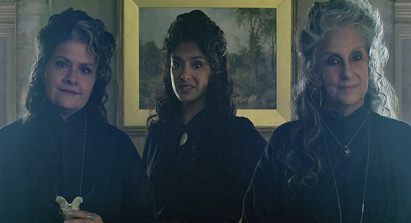

Dream

Dream was one of the seven Endless, powerful beings that are older than gods. He went by countless names; such as Oneiros, Morpheus and Sandman. He was the personification, as well as the lord over all dreams and reality.
Dream came into existence once lifeforms capable of dreaming appeared in the universe. Dream was one of the Endless, personifications of ideas and concepts that were tied to life, and were fated to fulfill their functions until the universe ended and all life disappeared from the cosmos. The Endless are the children of Time, and Night is the mother of at least Dream.The parents, who predate all other existence, have grown estranged, and care little for the mortal world Dream concerns himself with.
As part of William Shakespeare's contract with Dream he wrote the first of two plays specifically for the Dream King, A Midsummer's Night Dream. Dream and the emissaries of Faerie were the audience for Will's first performance of the play. Dream told the court of Faerie that this was his payment for all the diversion they'd offered him in the past. Although their time on Earth was over humanity would remember them through Will's play.
Hob Gadling
In 1389, Dream and his sister Death made a stop at the White Horse pub, and overheard Hob Gadling -a lowly peasant- loudly declaring to his friends that he would never die because he chose not to. Intrigued by the very notion and sure that Hob would be begging for death if he received immortality, Dream convinced his sister, to let him undertake an experiment. Without introducing himself, he told Hob to meet him in 100 years time and Hob agreed. Thus, for the next five centuries they met at the same pub without fail. Each time, Dream asked if he still wanted to live and Hob continued to say, "I have so much to live for."
During their meeting in the 1800s, 1889 to be exact, Gadling accused Dream of being lonely. That he continued to meet Hob because they were friends, and that was why Death never came for Hob. Dream was outraged that Gadling would suggest that "one of my kind" needed friends and stormed out of the tavern. One century later, in 1989, Hob resolved to meet Dream once more despite their argument, hoping that Dream had forgiven him. While waiting for Dream who never turned up due to being imprisoned by Roderick Burgess, he learned that the pub was going to be torn down. He decided to wait at a nearby pub and left a message of where to find him. Finally, after freeing himself, Dream walked into the pub to Hob's surprise. Dream remarked, "I was always told it is bad manners to keep one's friends waiting," showing he had changed and valued their friendship.
The Fates
The Fates were summoned by Dream, who they were initially reluctant to help, referring to a time when he "helped" them with Circe. However, considering his offerings, including the snake, which one of the ladies consumed, they agreed to answer three questions. First, Dream asked about his sand pouch, which they revealed was sold in London to a magic user named Johanna Constantine, a relative of someone Dream knew 300 years ago. In his second question, he asked what happened to his helm, and they revealed that it was traded away to a demon for the Amulet of Protection. For his final question, he asked about his ruby, which was passed from a mother to a son.
When their daughter Calliope begged for their help after having been acquired by Richard Madoc, they explained that they could not help; she was lawfully bound and there were too few of the old powers who were willing or able to meddle in mortal affairs, as many had died, except the Endless. The Fates recalled that the Dream King and Calliope were close at one point, though they did not part on the best of terms, despite the fact that she did bear his child. Calliope replied that she would never accept the Dream King's help and that he wouldn't help her after what she did to him, but the Fates revealed to her that he too had been imprisoned by mortals and that her prayers had been wasted. Though apologetic, there was nothing The Fates could do to help.